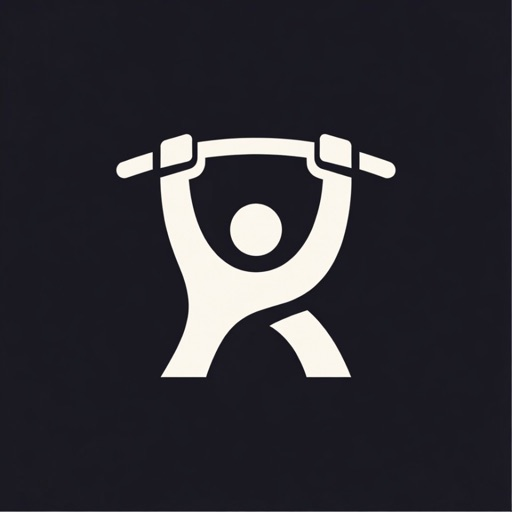
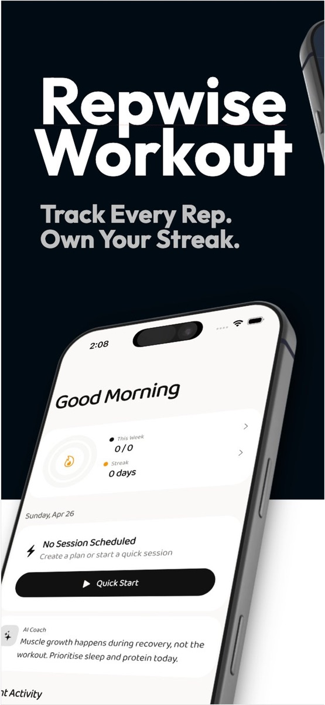
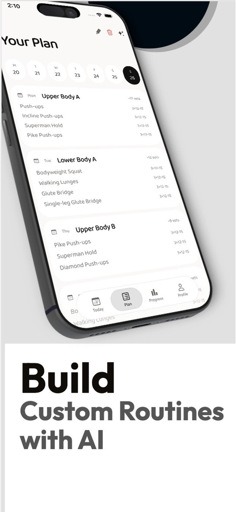
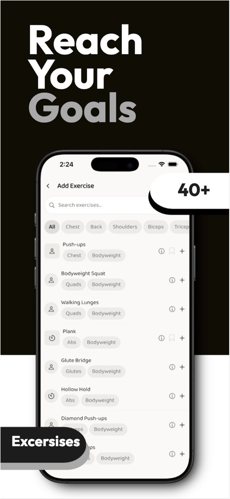
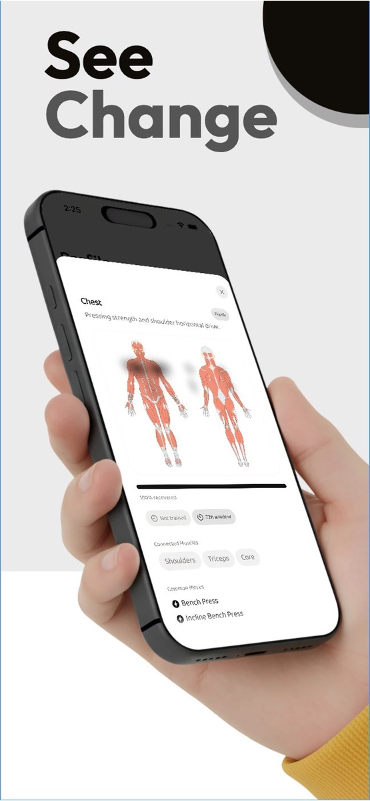
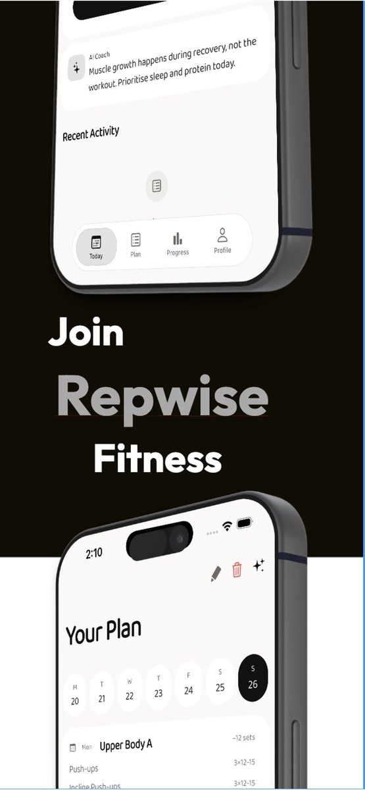

Repwise Fitness
Adaptive workout planning and training context, released as a real App Store product.

Understand progress.
Case overview
I developed Repwise as a focused companion for planning, completing, and reviewing strength training.
01Problem
Training tools can become a collection of disconnected utilities. Repwise needed to connect planning, the active session, and progress context without making the experience feel heavy.
02Product decisions
Onboarding uses goals, available equipment, location, and weekly schedule to shape a plan. During a workout, exercise guidance, rest timers, tracking, and a plate calculator stay in the same flow.
History, muscle readiness, and optional health context support the decision to train or recover without presenting them as medical advice.
Released product
Official App Store screens





03Release evidence
The product is listed for iPhone in Health & Fitness under developer Aditya Patel and supports iOS 13 or later. These are App Store facts; undocumented implementation details are intentionally omitted.
View on App Store04What I learned
Shipping requires more than a finished interface: the product has to communicate its value, survive release review, and remain understandable across onboarding, daily use, and return visits.